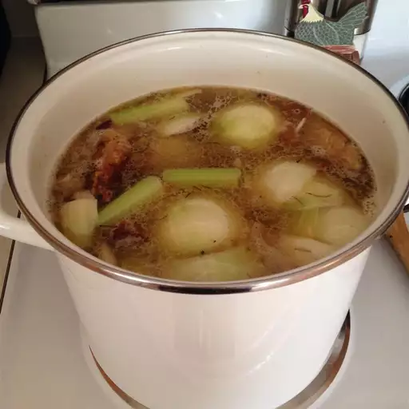

Chicken Stock

Chicken stock has almost endless uses, from soup bases, of course, and gravies
to a rich but low fat flavoring for veggies. The stock freezes will in those
zipper type freezer bags. After trying homemade stock you will never want the
store-bought kind again.
Ingredients
- 4 pounds chicken
- 7 cups water
- 1 large onion, halved
- 3 stalks celery
- 3 carrots, cut into 2 inch pieces
- 1 bay leaf
- 1 teaspoon grated fresh ginger
- salt to taste
Directions
- Place the chicken in a large pot over high heat. Add water to cover and bring
to a boil, then reduce heat to medium low and simmer for 1 hour.
- Remove chicken from pot. Leave water in pot. Cool chicken. Remove skin and
bones from meat. Return bones and skin to pot. Add onions, carrots, celery,
bay leaf, ginger, and salt. Continue simmering for 3 to 4 hours.
- Strain and cool the stock, uncovered.
- Use the meat for soups, salads, sandwiches, or other dishes where cooked chicken
is needed. After stock has been defatted, use or freeze immediately. I freeze
the stock in one-cup amounts and use instead of water for cooking rice or
vegetables or making gravy.